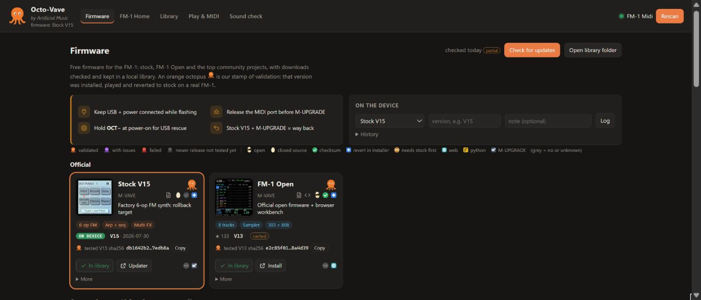
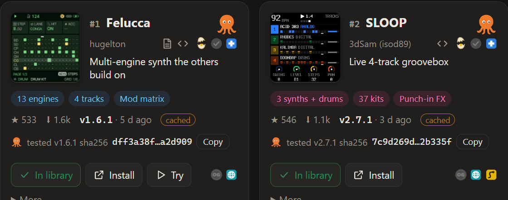
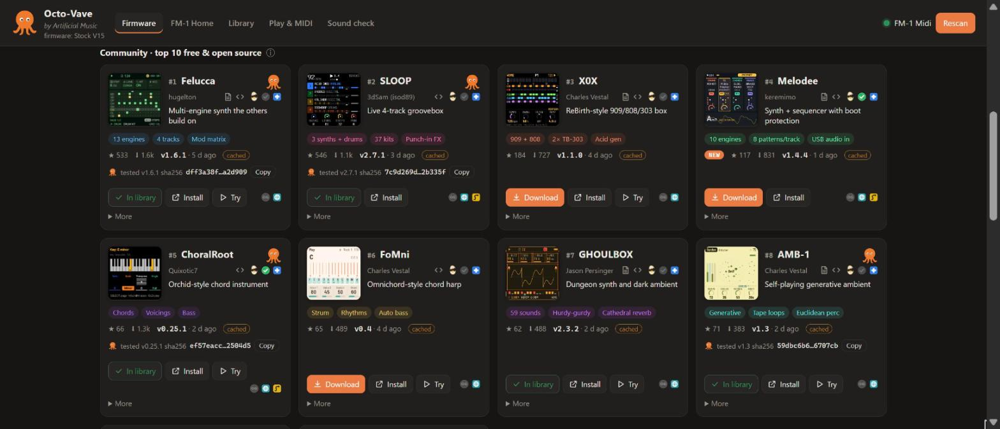
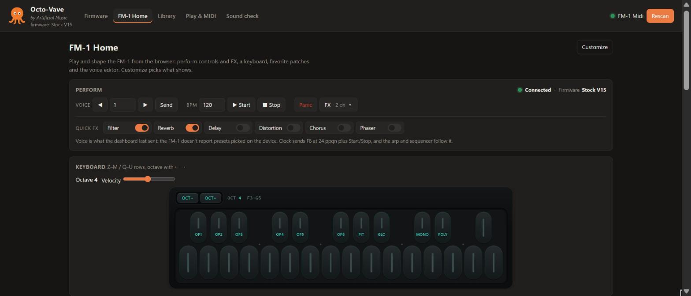
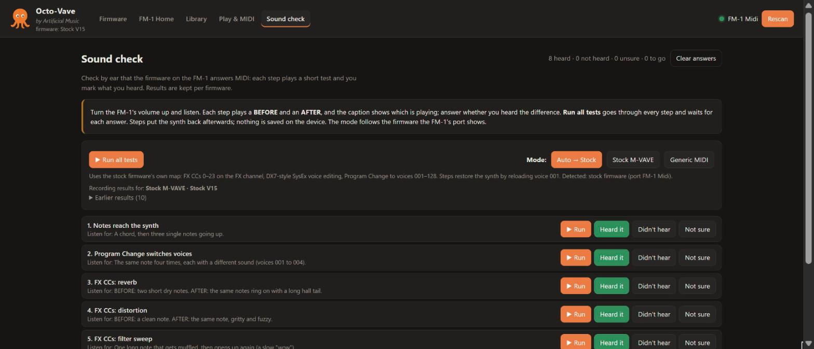

by Artificial Music
Every free firmware for the M-VAVE FM-1 in one place: found, ranked, downloaded, checked and played. The orange octopus marks firmware tested on a real FM-1.

Official, the community top 10 ranked by stars and downloads, free closed-source projects, and the next 20. Paid firmware is never listed.
Open or closed source, published checksum, one-click revert to stock, and how it installs: web, Python or M-UPGRADE.
Files land in a local library, verified against the SHA256 each project publishes.
Installed, played, Sound-checked and reverted to stock. The exact file tested is pinned by its SHA256.
A key bed modeled on the device, perform and FX controls, a DX7-style voice editor, a patch library and MIDI tools.
A small Python server on 127.0.0.1 and a page in Chrome or Edge. No account, no cloud, nothing to install but Python.
git clone the repository.python server.py (Windows: double-click start.cmd).http://127.0.0.1:8765, plug in the FM-1, press Connect and allow MIDI + SysEx.
Live from firmware/validated.json.
A grey octopus means the project has a newer release that hasn't been tested yet; a nightly check flips it automatically.
Got the file somewhere else? Compare its SHA256 with the one below.
| Firmware | Version | Tested | File SHA256 | |
|---|---|---|---|---|
| Loading… | ||||
Tested one yourself? Send a validation report.


